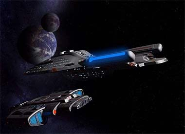
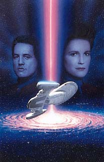
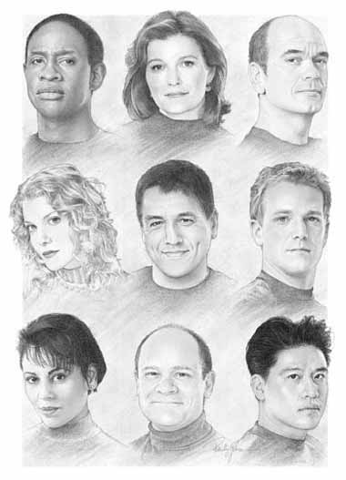
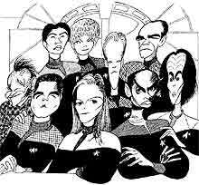
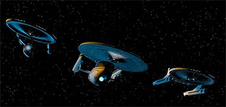
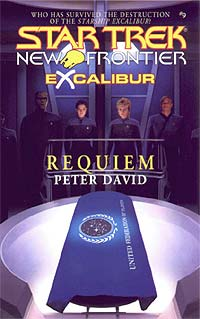
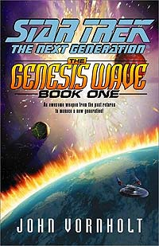

|

Publicado originalmente
em 2001

Procuram-se novas idias

|
 E quando eu falo das pessoas que esto preocupadas com o bem-estar de Jornada (sem falar nos rendimentos no mercado) a ponto de perder o sono, no estou falando dos famosos trekkies mais "hardcore", aqueles que so capazes de brigar ao discutir se a srie original melhor divertimento que "Contatos Imediatos do Terceiro Grau" e se digladiar por polticas de f-clubes e por a vai. Estou falando dos prprios produtores e executivos que vm dirigindo a srie (em direo revitalizao ou a um penhasco, acho que nem mesmo eles sabem --da esse estresse todo que Mr. Berman e cia. vm mostrando ultimamente). Eles vm mostrando essa insegurana ao no contar para os prprios atores como a srie ir acabar (no acredito que estejam fazendo isso em nome da segurana --para mim, isso, somado ao rumor de mltiplos finais, mostra apenas o quo inseguros eles esto para decidir como acabar uma srie que se tornou uma dor de cabea para o estdio e para o franchise).  Mas eles esto com muito, mas muito medo mesmo, de falar da famigerada Srie V. At agora, s vimos eles adiando e atrasando o anncio do novo programa (ei, no era para ter sado em janeiro?). A boataria saiu do controle de forma tal que at o que Richard Arnold e (pasmem!) William Shatner falam sobre a nova srie levado a srio. (Adoro o Bill, mas ele sabe mais do que se passa dentro da Paramount ultimamente do que eu sei o que se passa nos bastidores da revista Sexy.) E eu aposto --mas no ponho minha mo no fogo por isso-- que essa situao de insegurana pode ter levado Rick Berman (ou algum ligado ao atual estado de Jornada) a complicar as coisas para o lado da produo do DVD de "Jornada nas Estrelas - O Filme", que vem passando por diversos problemas com a Paramount ultimamente. Coincidncia? Duvido --tem cheiro de B nisso.   Particularmente, eu acho que hora de um novo produtor talentoso assumir Jornada, e o primeiro que me vem cabea Steven Bochco (de "Nova Iorque Contra o Crime" e "LA Law"), um produtor que infelizmente j revelou imprensa que fico no sua praia. O que triste, porque apenas um talento com a fora de Bochco e sua bagagem junto aos estdios seria capaz de tirar Jornada (e a fico cientfica televisiva em geral) dos limites em que ela parece estar presa atualmente.   Por tudo isso, por enquanto eu no vejo soluo. Ou melhor, vejo, mas no nas telas e sim nas pginas de livros e de quadrinhos. Escutem a voz da razo, Rick, John, Brannon --no precisam nem ir to longe da Paramount para buscar novas idias. Os livros da Pocket Books e os quadrinhos de Jornada produzidos pela Wildstorm so o que de melhor foi feito sobre a srie em 1999/2000.  Enquanto isso, na Paramount
Pictures... |
 Como
salvar Jornada nas Estrelas? Voc sabe, essa a pergunta
que no quer calar e est deixando muitos com insnia neste
princpio do ano santo de 2001, quando o franchise --que no
pode mais ser visto como "just a tv show", mas como um
verdadeiro imprio de merchandise e marketing-- completa 35 anos
de vida (alguns diriam at sobrevida --para muitos, Jornada
foi consumida pelas chamas junto com o corpo de Benjamin Sisko em
1999).
Como
salvar Jornada nas Estrelas? Voc sabe, essa a pergunta
que no quer calar e est deixando muitos com insnia neste
princpio do ano santo de 2001, quando o franchise --que no
pode mais ser visto como "just a tv show", mas como um
verdadeiro imprio de merchandise e marketing-- completa 35 anos
de vida (alguns diriam at sobrevida --para muitos, Jornada
foi consumida pelas chamas junto com o corpo de Benjamin Sisko em
1999).